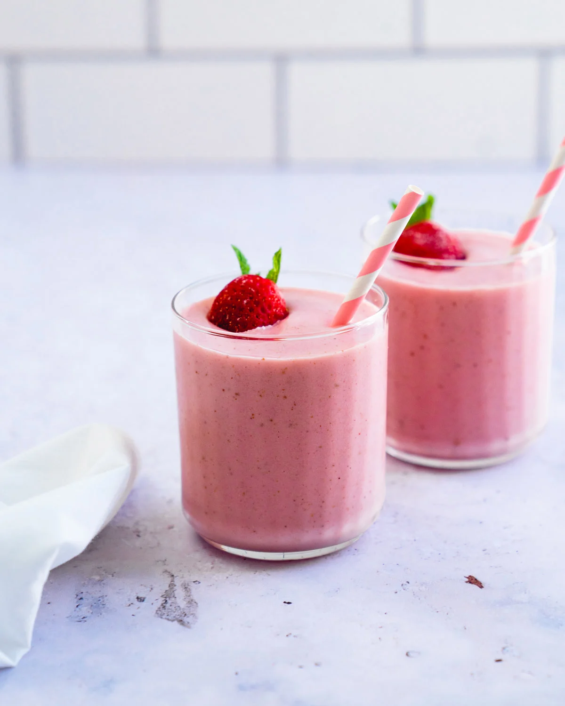
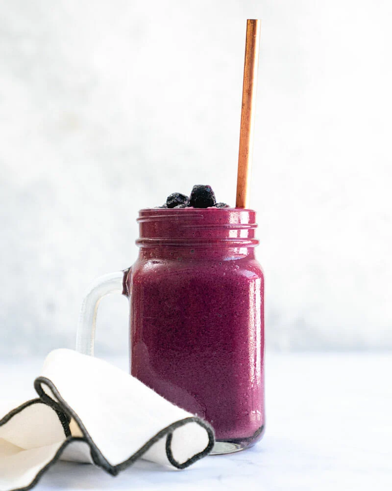
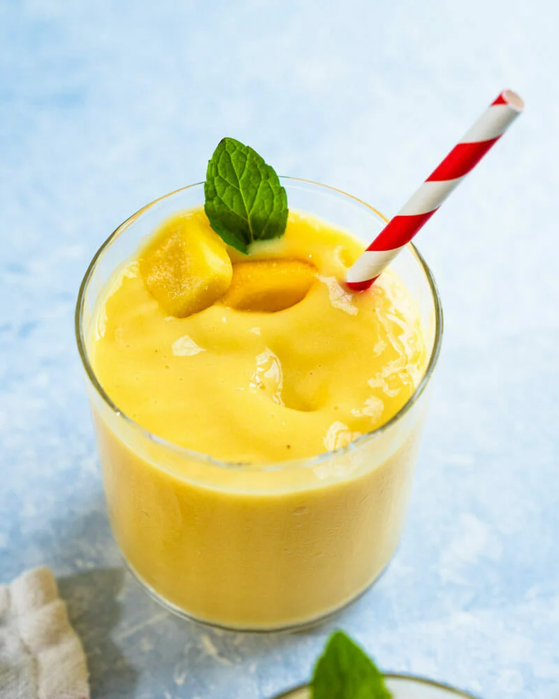
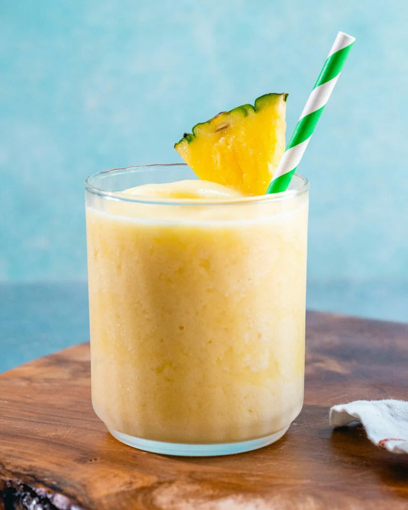
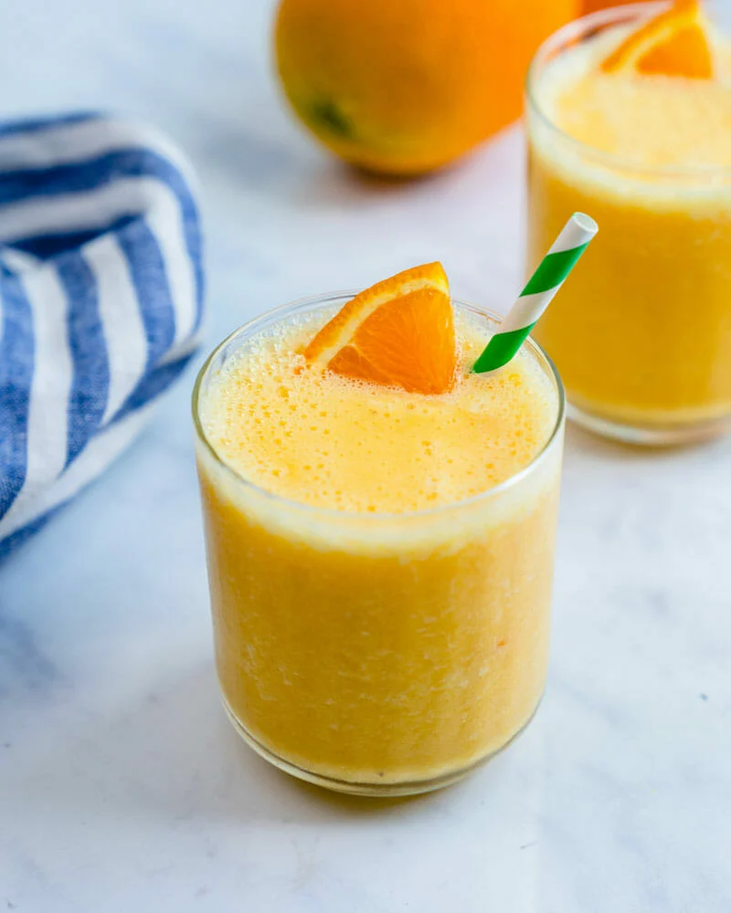

Strawberry Smoothie

Ingredients
- 1 cup milk of choice
- ¼ cup Greek yogurt (or plain, vanilla or strawberry)
*
- 1 ½ tablespoons maple syrup, honey, or agave syrup
- 2 cups frozen strawberries
- 1 ripe banana (room temperature)
Method
- Place all ingredients in the order listed in a blender, breaking the banana into pieces. Add ½ cup
ice.
Blend until creamy and frothy, stopping a few times to scrape down the sides.
- Taste and adjust sweetness as desired (flavor will vary based on the ripeness of the bananas and
brand
of berries). Serve immediately or store in a covered jar in the refrigerator for 2 days.
Blueberry Smoothie

Ingredients
- 1 medium carrot
- ½ cup Greek yogurt*
- 2 tablespoons to ¼ cup water
- 1 large ripe banana, broken into pieces
- 2 cups frozen blueberries
- ½ teaspoon cinnamon
Method
- Dice the carrot. Place the Greek yogurt and water in the bottom of the blender, followed by the
carrot,
banana, frozen blueberries, and cinnamon.
- Blend on high until a smooth purple puree forms, scraping and adding a bit of additional water as
needed. Serve immediately.
Mango Smoothie

Ingredients
- 3 cups frozen mango (or fresh)
- 1/2 banana (room temperature, broken into chunks)
- ½ cup water
- ½ cup milk (or non-dairy milk like oat milk or almond milk)*
- 5 ice cubes
- 1 tablespoon fresh squeezed lemon juice
Method
- Add all ingredients to a blender, adding the liquids first, except for 2 cups frozen mango. Blend until
smooth.
Add the 2 cups frozen mango and blend again until smooth, adding a splash of additional water or milk
to get it to blend if necessary.
Pineapple Smoothie

Ingredients
- 3 cups frozen pineapple (or fresh, peeled and cubed)
- 1/2 banana
- ¾ cup water
- ½ cup milk (or almond milk or oat milk)*
- 5 ice cubes
- 1 ½ tablespoons fresh squeezed lime juice (or lemon juice)
Method
- Place all ingredients except 1 cup frozen pineapple in a blender. Blend until smooth, stopping and
stirring as necessary.
- Add the final cup of frozen pineapple and blend again. Eat immediately or store in a sealed jar for 1
day.
Orange Smoothie

Ingredients
- 2 large peeled oranges (or 3 medium)
- ½ tablespoon orange zest
- 1 banana (room temperature)
- ¼ cup Greek yogurt
- ½ teaspoon vanilla extract
- 1 tablespoon maple syrup or honey (optional)
- 2 to 2 1/2 cups ice
Method
- Zest about ½ orange. Add the peeled oranges, orange zest, banana, Greek yogurt, vanilla, maple syrup or
honey, and ice to a blender. Blend until smooth.
- Enjoy immediately or store up to 1 day refrigerated.